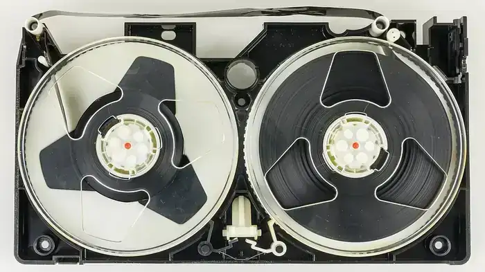
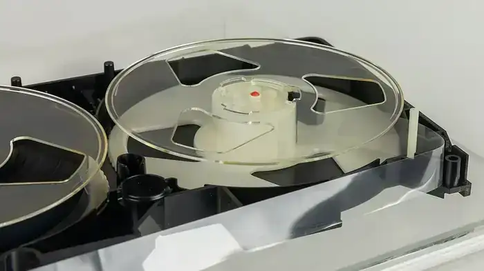
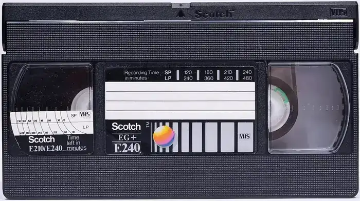

The series
Local 58 is a series of short videos presented as broadcasts from a local television station, in which public information announcements turn into something else: warnings about the sky, instructions to look at the moon, and messages that seem to come from somewhere other than the station.
Maps, diagrams and images






The status
The series is fiction, made by a creator known online, and it is a founding work of analog horror. Its effect comes from the format — the test card, the public-information voice, the low-resolution tape — which carries an expectation of authority.
The archive notes the technique because the same expectation is what makes real broadcasts and official notices persuasive.
Documented: the series and its format.
Documented: its influence on the genre.
Not a claim: about the world.
The technique: borrowed authority.
The label: fiction.
Why it is in the archive
Because it shows how much of a claim's force comes from its packaging, which is the archive's recurring subject.
Open resources on this topic
- BookElectrical Workers Local 58 Pension Trust Fund, International Brotherhood of Electrical Workers v. Williams (Internet Archive, free to read)
- BookElectrical Workers Pension Trust Fund of Local 58 v. Renton Electric Company, Incorporated (Internet Archive, free to read)
- BookElectrical Workers Local 58 Pension Trust Fund v. Phoenix Environmental, Incorporated (Internet Archive, free to read)
- PapersOpen-access articles: DOAJ · PubMed Central · Internet Archive Scholar
- BooksPublic-domain and borrowable copies: Open Library · Project Gutenberg · Google Books
Cite this page
Momin, S. (2026). Local 58. The Larger World Archive. https://drsamonline.github.io/LARGE_GLOBE/local-58.htmlMomin, Sohil. “Local 58.” The Larger World Archive, 2026, https://drsamonline.github.io/LARGE_GLOBE/local-58.html.Momin, Sohil. “Local 58.” The Larger World Archive, 2026. https://drsamonline.github.io/LARGE_GLOBE/local-58.html.@misc{local2026local,
author = {Momin, Sohil},
title = {Local 58},
year = {2026},
howpublished = {The Larger World Archive},
url = {https://drsamonline.github.io/LARGE_GLOBE/local-58.html},
note = {Last reviewed 20 November 2026}
}Last reviewed 20 November 2026 · Corrections policy · this page is not peer reviewed
Sources for this page
- Wikipedia, “Analog horror” — the genreen.wikipedia.org
- Wikipedia, “Emergency broadcasting” — the format imitateden.wikipedia.org
- Wikipedia, “Test card” — the imageryen.wikipedia.org
- Wikipedia, “Public information film” — the conventionen.wikipedia.org